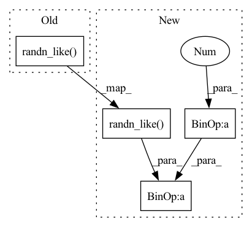

Pattern ID :5063

Before Change
if weight_decay != 0:
d_p = d_p.add(p, alpha=weight_decay / num_training_samples)
if add_langevin_noise:
d_p.add(torch.randn_like(d_p) * math.sqrt(2) / (num_training_samples * math.sqrt(group["lr"])))
if momentum != 0:
param_state = self.state[p]
if "momentum_buffer" not in param_state:
After Change
else:
d_p = d_p.mul(-group["lr"])
if add_langevin_noise:
d_p = d_p.add(torch.randn_like(d_p) * math.sqrt(2 * (1 - momentum) * group["lr"]) / (num_training_samples))
p.add_(d_p)
param_state["momentum_buffer"] = d_p
return loss
In pattern: SUPERPATTERN
Frequency: 3
Non-data size: 4
Instances
Fragment ID: 17774351
Project Name: reml-lab/ursabench
Commit Name: 724e9730793ac2acd83c7f786f3163eba716b232
Time: 2020-11-02
Author: addcobb@hotmail.com
File Name: URSABench/inference/optim_sghmc.py
M Class Name: optimSGHMC
N Class Name: optimSGHMC
M Method Name: step(3)
N Method Name: step(3)
M Parent Class: Optimizer
N Parent Class: Optimizer
M File Name: URSABench/inference/optim_sghmc.py
N File Name: URSABench/inference/optim_sghmc.py
M Start Line: 36
M End Line: 63
N Start Line: 36
N End Line: 65
'>
Before Change
b, *_, device = *x.shape, x.device
batched_times = torch.full((x.shape[0],), t, device = x.device, dtype = torch.long)
model_mean, _, model_log_variance, x_start = self.p_mean_variance(x = x, t = batched_times, x_self_cond = x_self_cond, clip_denoised = clip_denoised)
noise = torch.randn_like(x) if t > 0 else 0. // no noise if t == 0
pred_img = model_mean + (0.5 * model_log_variance).exp() * noise
return pred_img, x_start
After Change
def p_sample(self, x, t: int, t_next = None, x_self_cond = None, clip_denoised = True):
b, *_, device = *x.shape, x.device
model_mean, _, model_log_variance, x_start = self.p_mean_variance(x = x, t = t, t_next = t_next, clip_denoised = True)
noise = torch.randn_like(x)
// no noise when t == 0
is_last_sampling_timestep = t_next == 0
nonzero_mask = (1 - is_last_sampling_timestep.float()).reshape(b, *((1,) * (len(x.shape) - 1)))
pred = model_mean + nonzero_mask * (0.5 * model_log_variance).exp() * noise
return pred, x_start
@torch.no_grad()
'>
Fragment ID: 17774349
Project Name: lucidrains/bit-diffusion
Commit Name: 7b25c9d18c4aa4200c7df429ffa7815641f67021
Time: 2022-08-17
Author: lucidrains@gmail.com
File Name: bit_diffusion/bit_diffusion.py
M Class Name: BitDiffusion
N Class Name: BitDiffusion
M Method Name: p_sample(6)
N Method Name: p_sample(5)
M Parent Class: nn.Module
N Parent Class: nn.Module
M File Name: bit_diffusion/bit_diffusion.py
N File Name: bit_diffusion/bit_diffusion.py
M Start Line: 497
M End Line: 501
N Start Line: 518
N End Line: 526
'>
Before Change
padding=clipped_block_size // 2)
if drop_with_noise:
normal_noise = torch.randn_like(x)
x = x * block_mask + normal_noise * (1 - block_mask)
else:
normalize_scale = block_mask.numel() / (torch.sum(block_mask) + 1e-7)
x = x * block_mask * normalize_scale
After Change
uniform_noise = torch.rand((1, C, H, W), dtype=x.dtype, device=x.device)
else:
uniform_noise = torch.rand_like(x)
block_mask = ((2 - gamma - valid_block + uniform_noise) >= 1).to(dtype=x.dtype)
block_mask = -F.max_pool2d(
-block_mask,
kernel_size=clipped_block_size, // block_size,
stride=1,
padding=clipped_block_size // 2)
if with_noise:
normal_noise = torch.randn((1, C, H, W), dtype=x.dtype, device=x.device) if batchwise else torch.randn_like(x)
if inplace:
x.mul_(block_mask).add_(normal_noise * (1 - block_mask))
else:
x = x * block_mask + normal_noise * (1 - block_mask)
else:
'>
Fragment ID: 17774348
Project Name: feng-lab/pytorch-image-models
Commit Name: 1904ed8fecdb3f37818378421350315d2abf1224
Time: 2020-05-13
Author: rwightman@gmail.com
File Name: timm/models/layers/drop.py
M Class Name: AnonimousClass
N Class Name: AnonimousClass
M Method Name: drop_block_2d(7)
N Method Name: drop_block_2d(6)
M Parent Class:
N Parent Class:
M File Name: timm/models/layers/drop.py
N File Name: timm/models/layers/drop.py
M Start Line: 25
M End Line: 62
N Start Line: 26
N End Line: 69